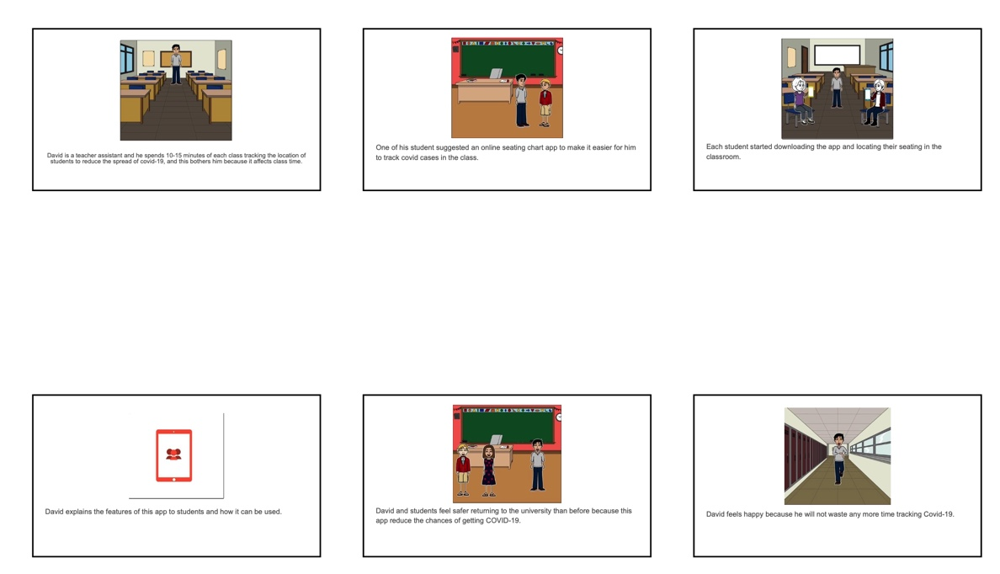
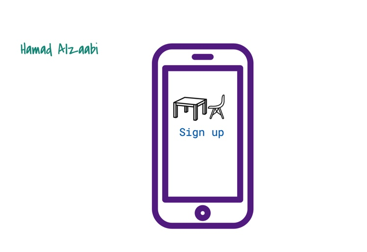

Problem Statement: Online Seating Chart

Students and teachers everywhere are annoyed with COVID-19 procedures. Many educators waste valuable class time in order to track the location of each of their students, every single class period. In some cases, student seating has been restricted in order to convenience the professors. Our solution provides a quick and easy process that will accurately contact trace for COVID-19.
Affinity Diagram: Online Seating Chart

As a group, we mentioned many ideas and brainstormed every aspect of online seating chart.
Persona: 4 Personas for Online Seating Chart

4 Personas of a typical online seating chart app user.
StoryBoard: 4 StoryBoards for Online Seating Chart
4 StoryBoards of a typical online seating chart app user.
Sketches
4 Sketches of the application.
Paper Prototype

An overview of every possible screen in the application.